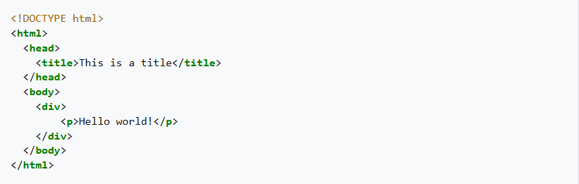

HTML (Hypertext Markup Language) is the standard markup language for documents designed to be displayed in a web browser. It can be assisted by technologies such as Cascading Style Sheets (CSS) and scripting languages such as JavaScript.
HTML was created by Tim Berners-Lee in 1991. It has undergone several revisions, with HTML5 being the latest version, which was finalized in 2014.

While a contractor at CERN in 1980, the physicist Tim Berners-Lee proposed and prototyped ENQUIRE, a system for CERN researchers to use and share documents. In 1989, Berners-Lee wrote a memo proposing an Internet-based hypertext system.[4] Berners-Lee specified HTML and wrote the browser and server software in late 1990. That year, Berners-Lee and CERN data systems engineer Robert Cailliau collaborated on a joint request for funding, but the project was not formally adopted by CERN. In his personal notes of 1990, Berners-Lee listed "some of the many areas in which hypertext is used"; an encyclopedia is the first entry.[5]
Read more about HTMLAn HTML document is made up of elements represented by tags. These elements can include headings, paragraphs, links, images, and other multimedia content.
HTML is used to create web pages and web applications. It provides the basic structure of a webpage, which can then be enhanced with CSS for styling and JavaScript for interactivity.
This section is in list format but may read better as prose. You can help by converting this section, if appropriate. Editing help is available. (November 2025)
24 November 1995
14 January 1997 HTML 3.2[16] was published as a W3C Recommendation. Following the IETF's closure of its HTML Working Group on September 12, 1996, this was the first version developed and standardized exclusively by the W3C.[17] Initially code-named "Wilbur",[18] HTML 3.2 dropped math formulas entirely, reconciled overlap among various proprietary extensions and adopted most of Netscape's visual markup tags. Netscape's blink element and Microsoft's marquee element were omitted due to a mutual agreement between the two companies.[14] A markup for mathematical formulas similar to that of HTML was standardized 14 months later in MathML.
HTML 4.0[19] was published as a W3C Recommendation. It offers three variations: Strict, in which deprecated elements are forbidden Transitional, in which deprecated elements are allowed Frameset, in which mostly only frame related elements are allowed. Initially code-named "Cougar",[18] HTML 4.0 adopted many browser-specific element types and attributes, but also sought to phase out Netscape's visual markup features by marking them as deprecated in favor of style sheets. HTML 4 is an SGML application conforming to ISO 8879 – SGML.[20] 24 April 1998 HTML 4.0[21] was reissued with minor edits without incrementing the version number.
